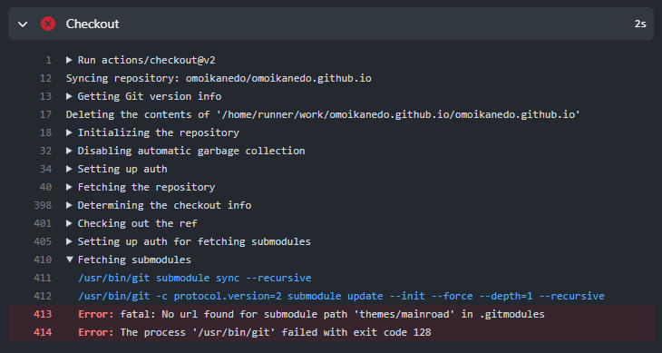

GithubPagesを更新しようとしたら`fatal: No url found for submodule path 'テーマフォルダ' in .gitmodules`

前回の Post を Github に commit した時にいつまで経ってもサイトが更新されず、ビルド状況を確認すると build が失敗していた。

Error: fatal: No url found for submodule path 'themes/mainroad' in .gitmodules
Error: The process '/usr/bin/git' failed with exit code 128
カスタム css では変えられない部分を直接 theme ファイル側で変更したのですが、その結果プロジェクト全体の .git に不整合が生じてしまったということでしょうか…。
git clone してきた theme はいじってはいけない、というのはちょっと辛い。GitPages に限らず、サブモジュールを git clone してきて使うケースだってあるだろうし。ということでメッセージをキーワードに Google 先生に問い合わせてみました。
なるほど。git の管理外にしてしまうのか…。
$ git rm -r --cached --ignore-unmatch path-to-target/
$ git commit
うーん、変更をいれる以上管理下に置きたいけど、その場合は zip で落としてくるしかないということですかね…。 (そもそも git 管理下で clone してきたものはいじるなという事なのか。)